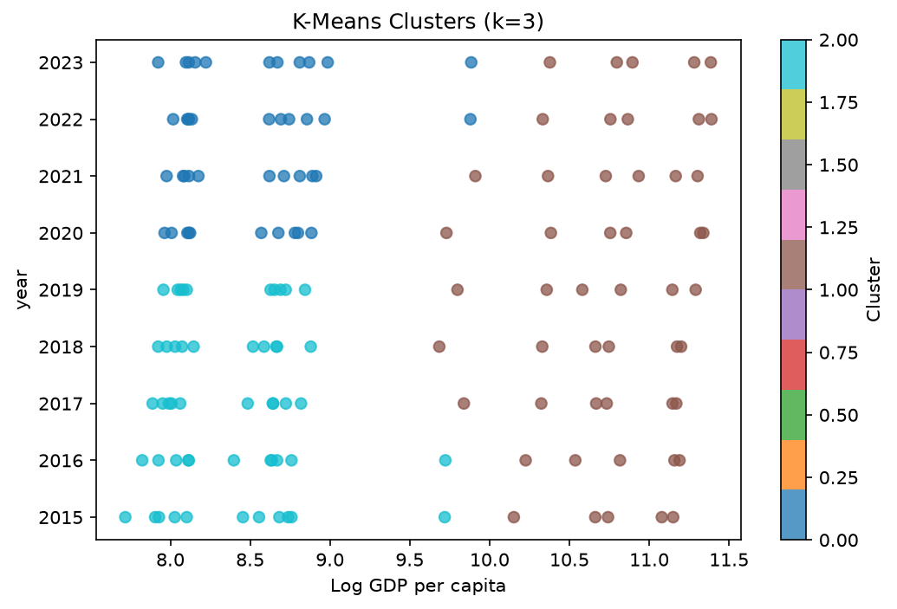

144 rows across 9 columns, with 0 duplicate rows.
8 numeric and 1 categorical columns were profiled.
Most incomplete columns: Healthy life expectancy at birth (4.2% null), Generosity (4.2% null), Perceptions of corruption (4.2% null).
Selected from the data's own shape — numeric arity, a detected time column, categorical cardinality — with no model in the loop: - Correlation - Outliers - Time Series - Category Analysis - Clustering
The strongest linear relationship is Life Ladder vs Log GDP per capita (r = +0.361).
| Feature A | Feature B | Pearson r |
|---|---|---|
| Life Ladder | Log GDP per capita | +0.361 |
| year | Freedom to make life choices | +0.177 |
| Life Ladder | Social support | +0.114 |
| Log GDP per capita | Perceptions of corruption | +0.094 |
| Social support | Healthy life expectancy at birth | +0.093 |
13 values across 3 of 8 numeric columns fall outside 1.5x IQR from the quartiles.
| Column | Outliers |
|---|---|
| Life Ladder | 11 |
| Generosity | 1 |
| Perceptions of corruption | 1 |

Healthy life expectancy at birth is decreasing over year, at -0.2972 Healthy life expectancy at birth per unit of year on an ordinary-least-squares fit.

Country name is the richest categorical column; its most common values are below.
| Country name | Count |
|---|---|
| Finland | 9 |
| Denmark | 9 |
| Iceland | 9 |
| Switzerland | 9 |
| Netherlands | 9 |
| Norway | 9 |
| Sweden | 9 |
| New Zealand | 9 |

K-Means settled on k = 3 over Log GDP per capita and year, the two columns carrying the most cluster structure (silhouette 0.4656).
| Cluster | Log GDP per capita | year |
|---|---|---|
| 0 | 8.5 | 2021.55 |
| 1 | 10.75 | 2019.0 |
| 2 | 8.38 | 2016.94 |

Generated by Autolysis in --offline mode: every figure above was computed locally, with no LLM in the loop. With a Gemini key, the same numbers are narrated by the model instead of this template.